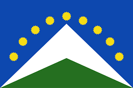

About Me

Hello! My name is Stanley Mauricio and I from Huancayo-Peru.I enjoy swimming and play soccerI was born and raised in this beautiful city nestled in the Peruvian Andes, where the climate is cool, and the people are warm and welcoming. Since I was very young, sports have been a fundamental part of my life. Swimming relaxes me and allows me to stay in shape, while soccer excites me because of the thrill and camaraderie experienced in every game. Besides sports, I like spending time with my family and friends. Huancayo offers many places to enjoy nature, like the Mantaro Valley, with its stunning landscapes and historic towns. I also love exploring the city and discovering its hidden corners, colorful markets, and delicious cuisine."
Huancayo,Perú
Huancayo is the capital city of the Junín region in central Peru. It is connected to the Peruvian capital, Lima, via the Central Andean Railway, one of the highest railway routes in the world. The sculptures in the city's Huanca Identity Park pay homage to the region's pre-Incan culture. The neoclassical Huancayo Cathedral overlooks the native plants of Constitution Square in the city center.